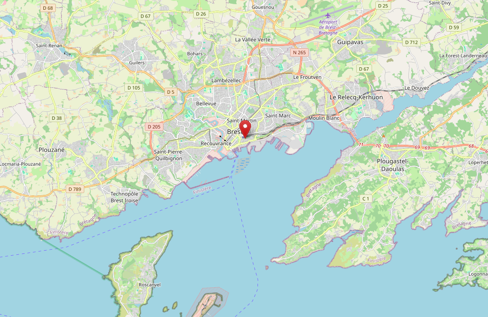
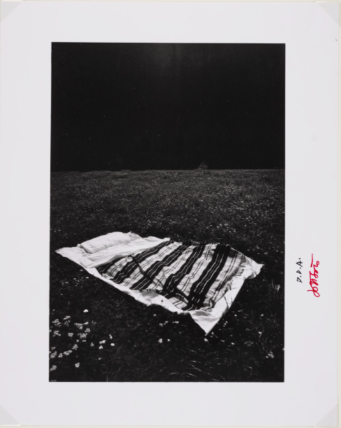
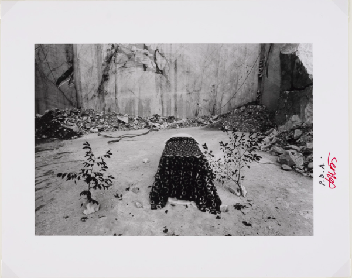
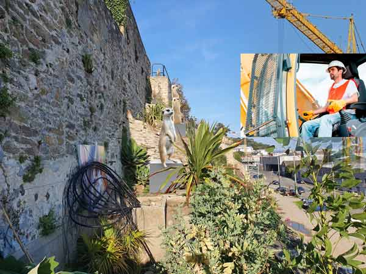
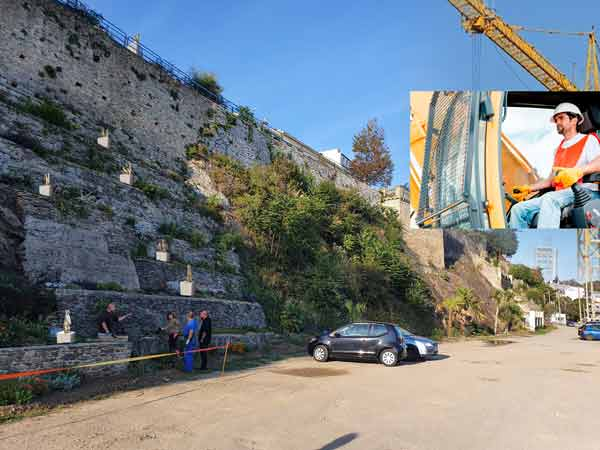
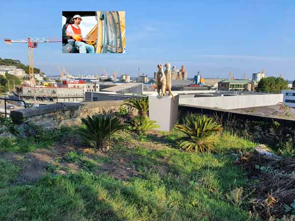
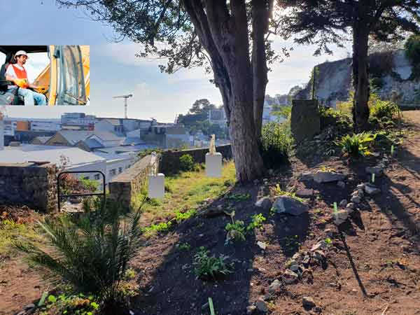
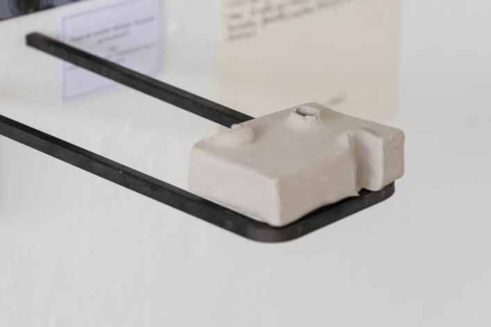
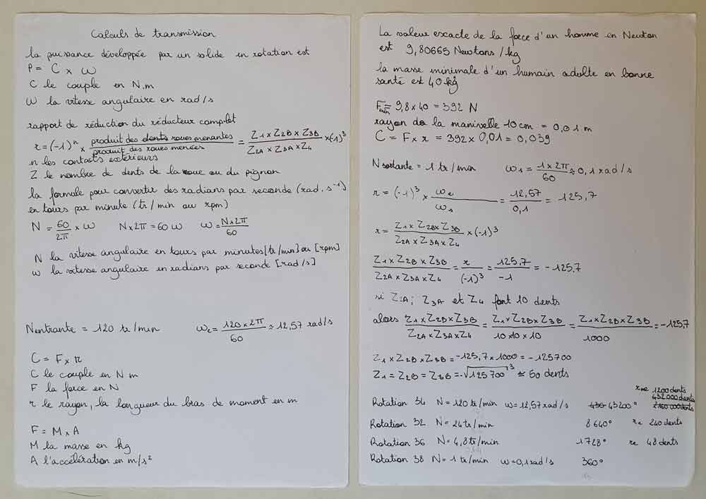
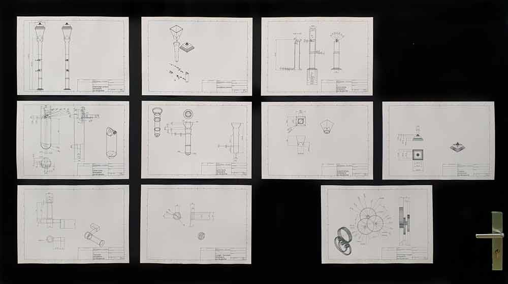

Le lampadaire qui se penche
Exploration au jardin de la falaise2021


Projet mené à l'EESAB Brest dans le cadre de l'atelier de projet de Glenn Pouliquen
Première exploration du jardin

Le corps à l'épreuve de l'espace

Ettore Sottsass, 1976, in Metafore Vuoi dormire... Tu veux dormir...

Ettore Sottsass, 1976, in Metafore ... O vuoi un letto ... Ou tu veux un lit

Perchée


Tête à tête entre les suricates du jardin extraordinaire de Brest (fictifs) et les grutiers du port de commerce de Brest

Point de vue




mobilier dérangé

Les dalles qui se percent...

... Pour laisser pousser les herbes
La matière dérangée


Le banc qui s'étire et se courbe
Pour laisser pousser l'arbuste

Le lampadaire qui se penche pour laisser pousser l'arbre

Calcul du nombre de dents pour les roues d'un engrenage qui transforme la vitesse en force

Plans surcotés du lampadaire qui se penche
Le lampadaire est lourd, mais les manivelles sont conçues pour ne pas nécessiter trop de force. En effet elles utilisent la vitesse plutôt que la force. Faire pencher le lampadaire nécessitera seulement beaucoup de tours de manivelle.
Le sens de rotation des manivelles est forcément inverse au sens dans lequel on souhaite faire pencher le lampadaire, parce que c'est contre-intuitif, donc drôle.
Alors que la flore contourne, s'adapte et coévolue avec les artefacts, donc avec les humains, pourquoi l'humain exterminerait-il la flore là où il s'installe ?
L'Homme moderne serait intelligent parce qu'il serait capable d'aller sur la lune, de générer des ordinateurs qui écrivent comme des humains ou de reproduire des cellules humaines en laboratoire.
Mais peut-on qualifier d'intelligent l'Homme moderne s'il ne sait pas s'adapter à son environnement et aux êtres vivants non-humains qui l'habitent ?
L'Homme moderne intelligent pourrait mettre en œuvre toutes les technologies à sa disposition afin de ne pas déranger la flore et son environnement, dont son avenir dépend. Il pourrait s'inspirer davantage de ses partenaires vivant et cohabiter, co-évoluer, avec eux.